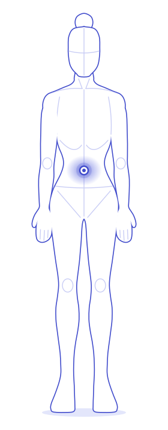
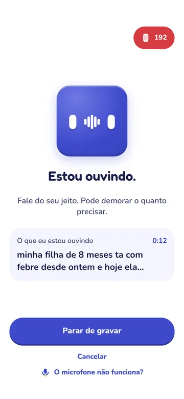
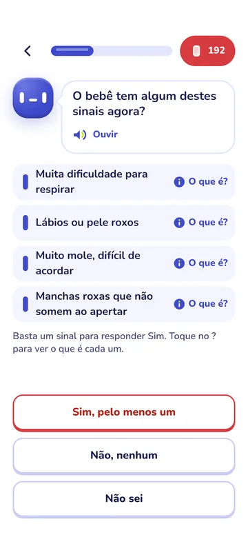
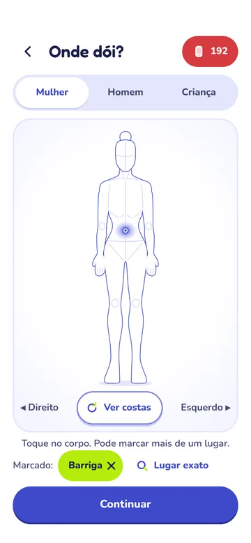
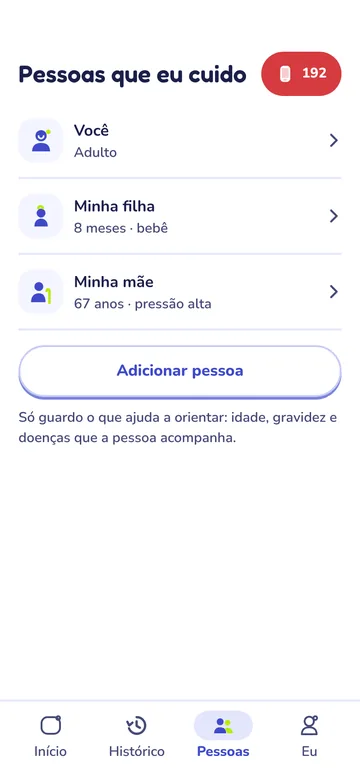

Em teste · ainda não está nas lojas
O jeito mais calmo de decidir para onde ir
A Tami orienta, não dá diagnóstico.
Quero testarVer como funciona3h da manhã
- Pronto-socorro?
- Posto de saúde?
- Esperar até amanhã?
- Chamar a ambulância?
- Ligar para alguém?
Na hora do susto, a dúvida é para onde ir
Com medo e com pressa, a gente decide no chute. A Tami ajuda a pensar com calma.
A conversa
Você conta. Ela pergunta. Vocês decidem juntos
Exemplo resumido: no app, esta conversa tem 15 perguntas. As daqui são iguais às do app.
- Você: Torci o tornozelo jogando bola. Está inchado, mas consigo andar.
- Tami: Obrigada por me contar. Agora vou te fazer algumas perguntas rápidas.
Você (ou a pessoa que precisa de ajuda) tem algum destes sinais?- Sangramento forte que não para, mesmo apertando
- Sofreu um acidente grave: trânsito, queda de altura, batida forte na cabeça, queimadura grande ou choque elétrico
- Você: Não, nenhum
- Tami: De 0 a 10, quanto incomoda agora?fracomédioforte
- Você: 0 a 3: fraco
- Cuidar em casaDá para cuidar disso em casa por enquanto.Se piorar, procure atendimento ou volte aqui.
Quatro caminhos
Para onde ir? Quatro caminhos, cada um com sua cor e sua frase.
1 · SAMU 192
Ligue 192 agora
Para emergência. A Tami mostra o que dizer no telefone.
2 · UPA hoje
Vá hoje a uma UPA
Para ter atendimento ainda hoje.
3 · UBS nos próximos dias
Procure o posto de saúde nos próximos dias
Para ir ao posto hoje ou nos próximos dias. Leve o cartão do SUS.
4 · Cuidar em casa
Dá para cuidar em casa por enquanto
Com os sinais para ficar de olho, se algo mudar.
Onde dói
Difícil explicar? Mostre no corpo
Toque no desenho, de frente ou de costas. Tem corpo de mulher, de homem e de criança.
Experimente: toque no joelho, no ombro ou onde quiser e diga quanto dói.
Quanto dói aqui?
Como é a dor?

Para quem tem pressa
Feita para quem está com medo e com pressa
Fale em vez de escrever
Toque em Falar e conte do seu jeito. A Tami mostra o que ouviu.
Ouça em vez de ler
O botão Ouvir lê as perguntas em voz alta.
Para quem você cuida
Bebê, criança, adulto ou idoso. Você escolhe com quem está acontecendo.
Um resumo para o atendimento
O que você contou e o caminho sugerido. Sem diagnóstico.
Telas do app
Veja a Tami por dentro
Arraste, use as setas ou toque nos pontos.

Falar em vez de escrever

Sinais de emergência

Onde dói

Pessoas que você cuida
Os quatro caminhos
- SAMU 192Ligue 192 agora
- UPA hojeVá hoje a uma UPA
- UBS nos próximos diasProcure o posto de saúde nos próximos dias
- Cuidar em casaDá para cuidar em casa por enquanto
Os quatro caminhos
Resumo
- Para quem
- Você, 30 anos
- O que foi contado
- Torceu o tornozelo jogando bola. Está inchado.
- Sinais de emergência
- Nenhum confirmado
- Caminho sugerido
- Cuidar em casa
A Tami não faz diagnóstico. O resumo mostra o que foi contado e o caminho sugerido.
Resumo para o atendimento
0106
Falar em vez de escrever
Segurança primeiro
O que a Tami faz. E o que ela não faz
A Tami faz
- Pergunta primeiro sobre sinais de emergência
- Ajuda a decidir para onde ir
- Mostra 192, CVV 188 e CIATox quando o assunto pede
- Na dúvida, sugere o caminho mais urgente
A Tami não faz
- Não dá diagnóstico
- Não indica remédio, dose nem exame
- Não substitui o atendimento de saúde
- Não decide por você
Como ela funciona por dentro
A Tami segue regras escritas a partir de materiais públicos de saúde. Ela não usa inteligência artificial que inventa respostas.
A Tami está em teste
A Tami está em teste e pode errar. Ainda não passou por avaliação da ANVISA nem por validação clínica.
Ver tudo sobre segurançaQuem faz
Um projeto independente, em teste
Quem faz é Gabriel Gomes, estudante de Sistemas de Informação da FIAP.
Conhecer a história- HojeO protótipo do app funciona, com conversa por texto e por voz.
- Próximo passoRevisão das regras por profissionais de saúde.
- DepoisTeste com mais pessoas, por convite.
- LojasAinda sem data.
Quer ajudar a deixar a Tami melhor?
O teste está começando aos poucos, por convite. Sua opinião ajuda a deixar a Tami mais clara.
Quero testar